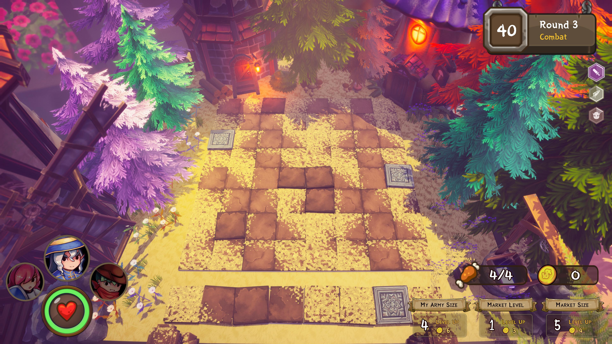
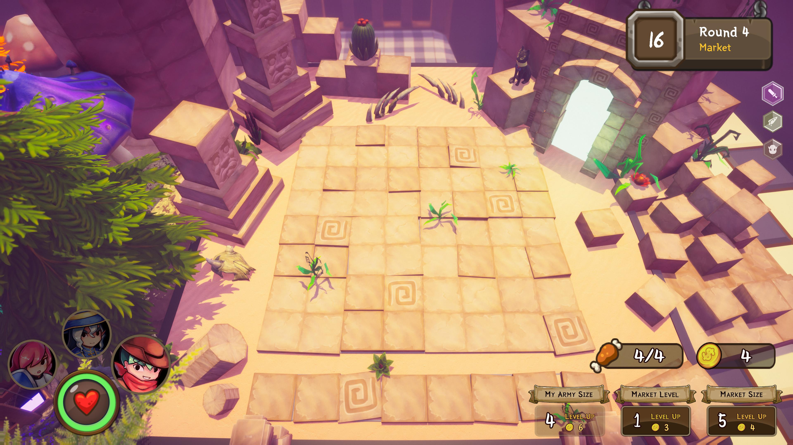
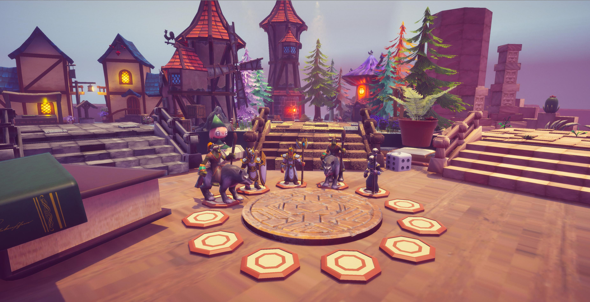
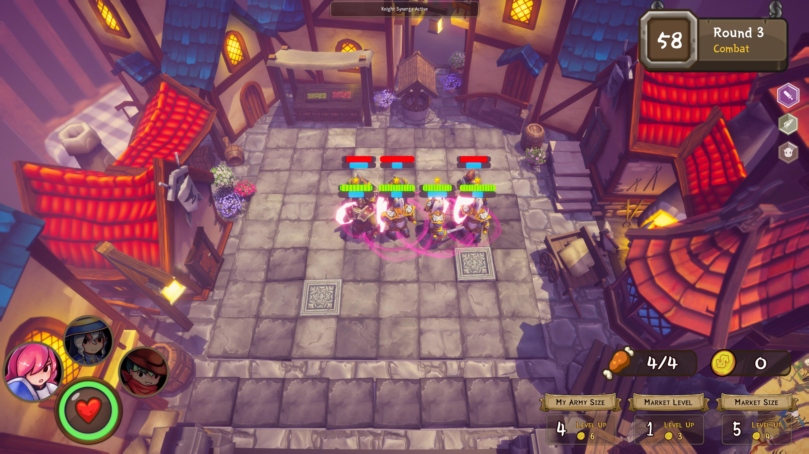
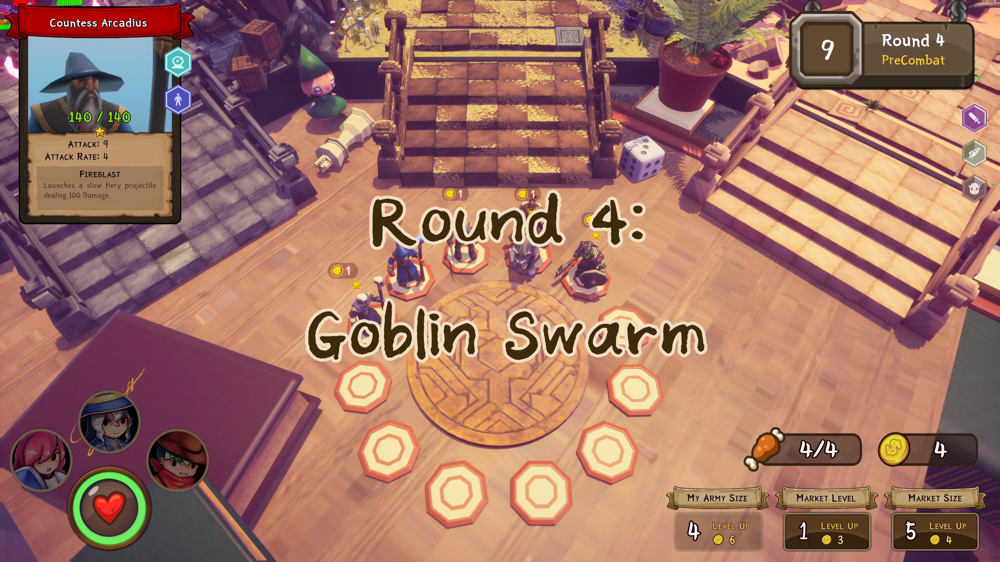

Overview

Overview
I Was Tasked To Defend This Place With My 2 Friends! is a co-operative auto-battler game that encourages communication and good resource management. It was developed during the course of CS4350 Game Development Proejct in AY2019/2020 Semester 1. In the 15th School of Computing Term Project Showcase (15th-STePS), I Was Tasked To Defend This Place With My 2 Friends! achieved 1st Place.
My Role
Programmer and Game Designer, mainly responsible for features such as:
- Character and Enemy Design and Implementation
- Level Design and Game Flow
- Environmental Design
- and General Game Design and Mechanics
Duration
August 18, 2019 - December 6, 2019
Project Team
Koh Lewis
Stanley Tay
Nicholas Chua
Tan Yi Jing, Jolyn
Yeo Jun Kai
Tools
Unity
Github
Links
Creating the World
 We wanted to make a light-hearted strategy game. Inspired by Hearthstone, we tried to make our game feel like a board game. The units which the players play with look like minatures on a chess board. There are small knick-knacks and game pieces lying around the place. Each board looks and feels over-the-top. We wanted to give a playful, whimsical feeling to the players as they were playing our game.
Encouraging Co-operation
The game centers around gold management and the market. Each round, players will have to decide what to do with their gold, whether that involves buying new pieces from the market for their army or upgrading the market to search for better units. The players will add these pieces to their army to improve their strength and try to survive the enemy attack waves.
At the start of every round, new units are generated into the market. There are over 15 different units in this game. The market is shared between players, so if one of the players decide to purchase a piece, the other players will be unable to. Players need to talk to each other to discuss who would benefit most from each individual piece, as they are all unique and come with different stats and abilities.
As a result of a shared market, market upgrades are also shared. If a player decides instead to spend their gold on upgrading the market, the other players will be able to benefit also. Players will need to carefully decide if their army is strong enough to survive the next round so that they can spend their gold on upgrades. The players as a whole need to co-operate to make sure that they are upgrading the market at a steady pace, less their army becomes outpaced by the enemy waves.
Replayability through Exploration
The units in the game are made out of 5 different classes and 4 different races. Each race and class has their own synergy bonus - an effect that is activated when there is a certain mass of a specific race or class, which gain in power as more units are amassed. Each of these effects are very unique and change the way the players interact with the game. They are also not very easy to achieve. It is likely that in a single game, only one of the higher tier effects will be activated, with a few smaller tier effects. This means that to experience all the different synergies, the players will need to play the game again, and go for different units and strategies.
Each round, the enemy attacks all players. There are over 10 different rounds of combat in the game, and each round has a unique enemy composition. The rounds are pretty hard to get through, so it is likely for a team to die before they see every round. Since each round is unique, the players know that the following rounds will have different enemies, so they are incentivised to try again to make it further in the next game, so that they can experience the different enemies. Also, although not utilized due to time constraints, the code is set up so that it is easy to add alternate waves of enemies to each round. As such, a different set of enemies can show up in each game, making every game feel like a different challenge.